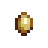

Las gallinas sueltan huevos con los que puedes hacer mayonesa. El color del huevo depende del color de la gallina, cosa que es aleatoria cuando compras la gallina en el Rancho de Marnie. El color de los huevos no afecta en nada a la mayonesa. Cuanto más cuidas a las gallinas, más amor reciben y por ende crecen y te dan huevos más grandes.


os patos adultos pueden dejar huevos o producir Pluma de pato cada dos días. Los patos felices tienen más probabilidad de producir plumas de pato en vez de huevos.


Los conejos adultos felices producirán Lana cada 4 días. Los conejos soltarán lana por sí mismos. Los conejos más felices tienen más posibilidades de producir una Pata de conejo en su lugar.


Las Vacas adultas producirán Leche diariamente. Si alcanzan una mayor amistad, producirán Leche XXL, que es mucho más valiosa.

Las cabras suelen producir leche cada dos días.


Las ovejas pueden esquilarse cuando les crece el pelaje. Normalmente, a una oveja le crecerá el pelaje cada 3 días si ha sido alimentada y tiene al menos 70 puntos de felicidad. Si el jugador tiene 900 o más de Amistad con la oveja y la ha acariciado al menos una vez, el tiempo de producción se reducirá a dos días.